Hi, I'm
Mohamed K. Mahdy
AEC Solutions Architect & AI Specialist · Munich
I build the software layer between engineers and their models, and the AI layer above it.
For five years I have been building tools for architects and engineers: Revit and Navisworks add-ins, scheduled services and cloud integrations that take repetitive coordination work off people's desks and run overnight on their own.
Now: AI & automation for BIM + Data Science at Sweco, and an M.Sc. at TUM
Work
Things I've built
Tools for architects, engineers and BIM coordinators, from small Revit add-ins to services that run unattended every night. Each project page starts with the problem it solves.
Most of the code lives in private repositories. I am happy to walk you through any of it.

Bimnox
Model checks, IFC, NWC, PDF and DWG exports, health and change reports over many Revit models, each model opened once.
Read the story →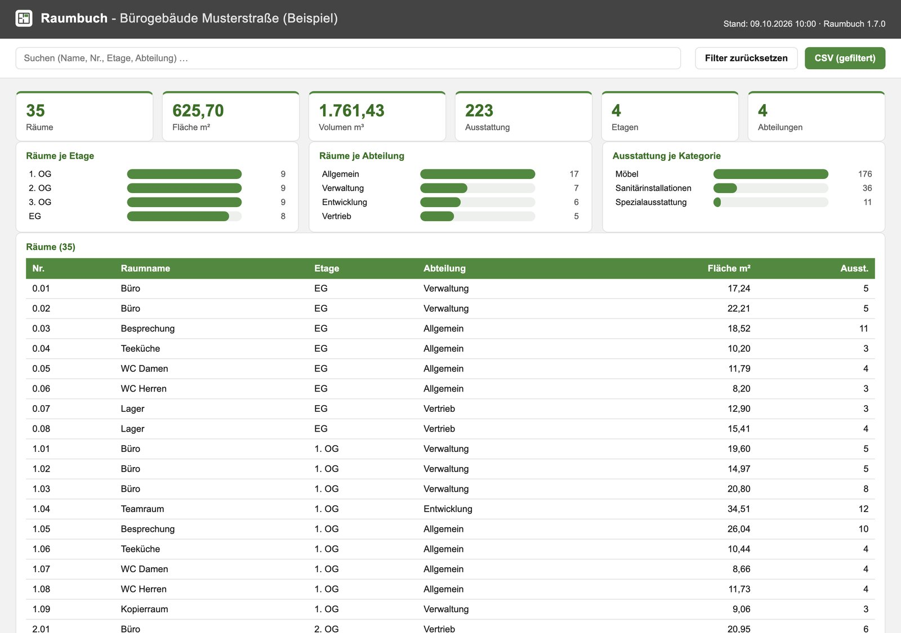
Raumbuch
Room books straight from the BIM model: a Revit add-in, and an ACC-connected web app that also opens IFC files in the browser.
Read the story →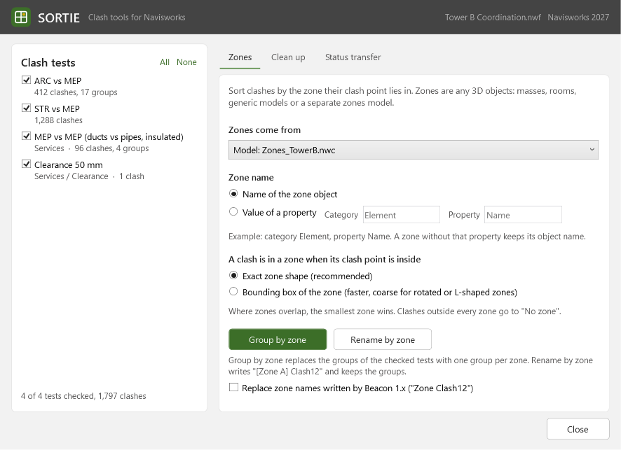
SORTIE
Clash zones and statuses for Navisworks: group clashes by the zone they sit in, and carry statuses and comments between tests and files.
Read the story →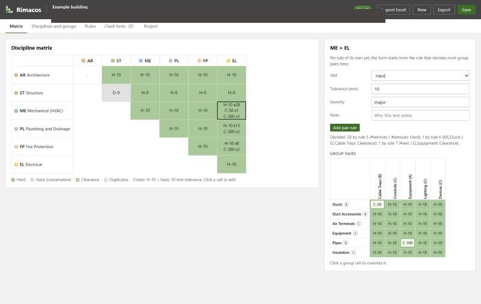
Rimacos
Clash detection matrices written as rules instead of cells, with Navisworks, IfcClash, BCF, IDS, Excel and HTML outputs.
Read the story →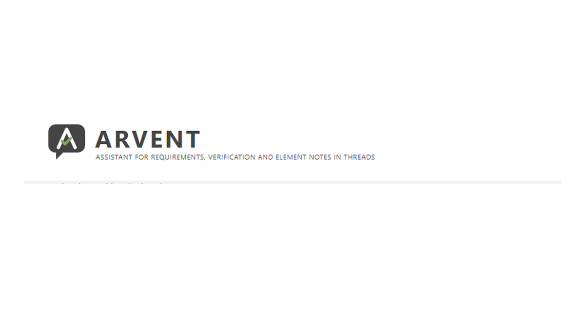
ARVENT
A BIM assistant in Speckle comment threads, on a local Llama: answers about elements, the whole model and the specification.
Read the story →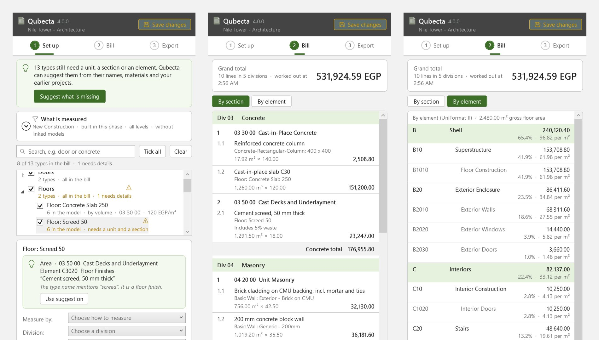
Qubecta
Priced bills of quantities and elemental cost plans straight from the Revit model, exported to Excel, PDF, CSV or GAEB. Revit 2022 to 2027.
Read the story →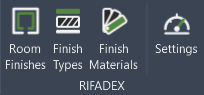
RIFADEX
Room finishes for Revit 2024 to 2027: pick wall, floor, skirting and ceiling finishes per room, then preview, draw and keep them up to date.
Read the story →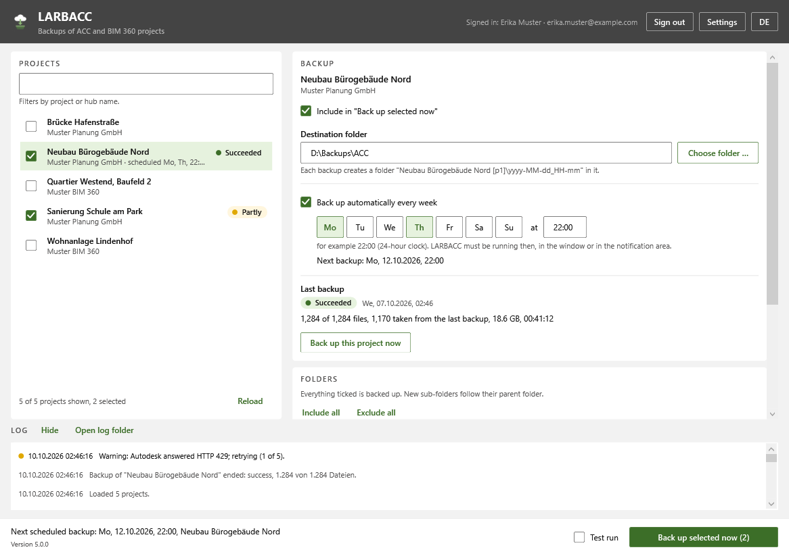
LARBACC
Scheduled local backups of Autodesk Construction Cloud and BIM 360 projects, incremental by hard links.
Read the story →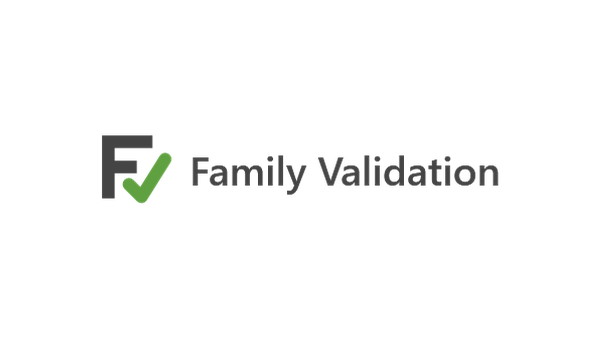
Family Validation
Checks and cleans Revit families before they reach the Autodesk Content Catalog, without the user ever opening Revit.
Read the story →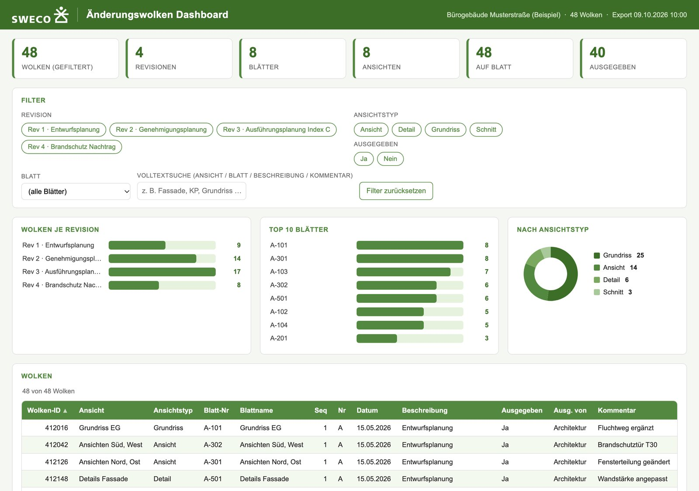
Cloud Revisions
Every revision cloud in a model, with its sheet and revision data, exported to Excel or an offline interactive dashboard.
Read the story →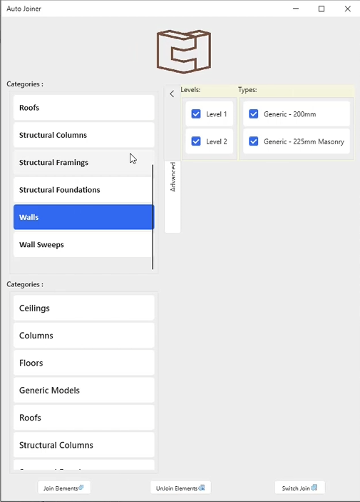
Revit Automation Suite
Production Revit plugins for model management, worksets, element joins and bulk file operations. With demos.
Read the story →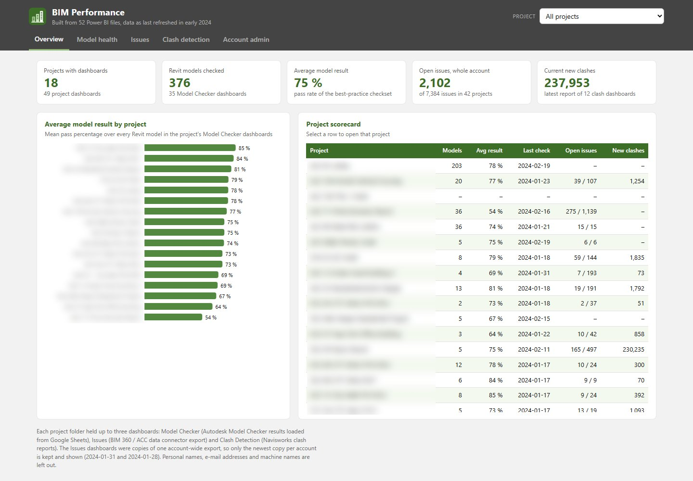
BIM Analytics
Model health, clash detection, issues and resourcing: automated reporting pipelines on ACC and BIM 360.
Read the story →
Curtain Panel Suite
Generator → Scheduler → Drawings → Tagger. A facade from parametric definition to annotated documentation.
Read the story →Experience
Where I've worked
Six organisations and a freelance practice, from Cairo to Dubai to Munich.
- 2025 to now
Sweco · Munich
Werkstudent, AI & Automation Specialist (BIM + Data Science)
I own the AI and automation roadmap for the BIM + Data Science department: scoping the automation portfolio, building Revit tools and LLM agents, and taking tools through internal release.
- 2024 to 2025
Obermeyer · Munich
BIM Software Developer
Model-checking rules in Desite MD, Power Automate flows for SharePoint data management, and Power BI reporting on model quality.
- 2023 to 2024
Dewan Architects + Engineers · Dubai, remote
BIM Software Developer & Data Analyst
BIM software development and data analytics for coordination, model quality and project reporting.
- 2022 to 2024
Freelance (Upwork) · Remote
BIM Software Developer & Data Analyst
18 client engagements across 895 billable hours with a 5.0 average rating: Revit automation, Dynamo and Python pipelines.
- 2023
Solid Construction · Cairo
BIM Software Developer
Revit add-ins and Dynamo workflows for structural, quantity and finishes work.
- 2021 to 2023
Pinnacle Misr · Cairo
BIM Coordinator / Developer
Revit plugins and Dynamo workflows on large projects, including the El Alamein Iconic Tower and Kitoko Ministerial City.
- 2020 to 2021
X-Dimension · Cairo
BIM Architect
BIM standards and templates, Dynamo workflows, and Scan-to-BIM.
How I build
A few things I care about
The same handful of rules shows up in almost everything above.
People stay in control
Every action is one undo step, a dry run comes before anything changes, and when AI proposes something, a person approves it.
Boring is a feature
Tools that run overnight on their own, retry when the network drops, and never leave a half-finished result that looks complete.
Data stays where it belongs
Local language models, IFC files read in the browser, and no secrets baked into a program.
Open where it counts
IFC, IDS and BCF wherever they fit, so a workflow is not locked to one vendor.
Skills
What I work with
AEC development
Add-ins and scripts inside the tools designers already use.
Revit API (2022 to 2027) · Navisworks API · Autodesk Model Checker · Dynamo · Grasshopper · RhinoCommon · pyRevit · Desite MDCloud & interoperability
Getting model data out of one platform and into another, with open standards where possible.
Autodesk Platform Services (Viewer, Model Derivative, Data Management, AEC Data Model) · ACC · BIM 360 · Speckle · IFC / IfcOpenShell / web-ifc · IDS · BCFAI & agents
Language models on top of BIM data, with the numbers computed by code rather than guessed.
Model Context Protocol · Claude API · local LLMs (Ollama, Llama) · constrained query planning · multi-agent orchestration · Azure OpenAI · LLM evaluationGeospatial
Graduate training at TUM in GIS, spatial data mining and remote sensing.
Spatial data mining · distributed GIS & cloud computing · geospatial data harmonisation · photogrammetry & remote sensing · mobile laser scanning · earth-observation data scienceSoftware
Desktop, web and back-end work, tested and built for every supported Revit version.
C# .NET (Framework 4.8, .NET 8, .NET 10; WPF / MVVM) · Python · React · Vite · FastAPI · Node.js · GraphQL · SQL · SQLite · xUnit · pytest · PydanticData & BI
Dashboards and flows that make project data visible to people who never open the model.
Power BI · Power Automate · Power Apps · SharePoint · pandas · machine learningAbout
A bit about me
I trained as an architectural engineer and moved into software because the interesting problems in construction are data problems. Most firms are sitting on valuable project data trapped in disconnected tools and manual workflows. I build the systems that connect it.
That has meant Revit and Navisworks plugins, model-health and clash-analytics platforms, and enterprise automation, across Cairo, Dubai and Munich. Along the way I delivered 18 independent client engagements across 895 billable hours with a 5.0 average rating, doubling my rate over the period.
My M.Sc. at TUM added the half I was missing: graduate work in geospatial information science, spatial data mining, photogrammetry and remote sensing alongside semantic modelling and software engineering. BIM, GIS and AI are converging, and very few people work across all three.
I speak Arabic natively, English at a professional working level (IELTS Academic 6.5), and I am learning German (A2).